Slide 2 · Why me, why this
The founder-market fit story behind NightDraft.
Not a SaaS idea from the outside. Scroll down.
A Strategic Marketing Plan for the AI sales tool that handles a restaurant's most valuable inquiries.
Not a SaaS idea from the outside. Scroll down.
My dad's a serial entrepreneur — brought Five Guys to the UK and Europe, owns a wine-led pub. I grew up in restaurants, not analysing them from outside. For a long time I thought my career might go down that path.
Summer at The River Cafe in London (Ruth Rogers' iconic Michelin-starred restaurant) where I met Chef Nick Anderer. Followed him to NYC on a J1, waiter then supervisor at Martina — his fast-casual pizzeria in the East Village, part of Danny Meyer's Union Square Hospitality Group.
Six-year friendship with Katie Exton, owner of Lorne (Bib Gourmand, Victoria). I still work part-time shifts when she's short-handed. She is the operator NightDraft is built for — the proof of concept lives in her inbox.
Even though I'm not in the industry day-to-day, I have journalist credentials — bylines in the Evening Standard ("Welcome to the Fat Badger", March 2025) and The Pass ("DFL Chronicles"). NightDraft is not automating replies. It is preserving tone, judgement, and hospitality.
Seven years at WPP developing technology systems for the creative agencies across EMEA. Built the network's first shared CRM — $163M+ pipeline, 1,247 users across 8 agencies, 82% of network revenue. I know how to build a product that people actually use.
Co-President of the INSEAD AI Club, elected by my classmates. Creative background + hospitality fluency + technical skill = I have built like never before. In March 2026 I shipped GrapeSnap to the App Store: a private, offline-first wine collecting platform. £500 total cost, cold-emailed Chris Barton (Shazam founder); his reply shaped the product.
This feels like it has come together in the last month, but my whole journey has led to this product. NightDraft is the only product this founder could credibly build.
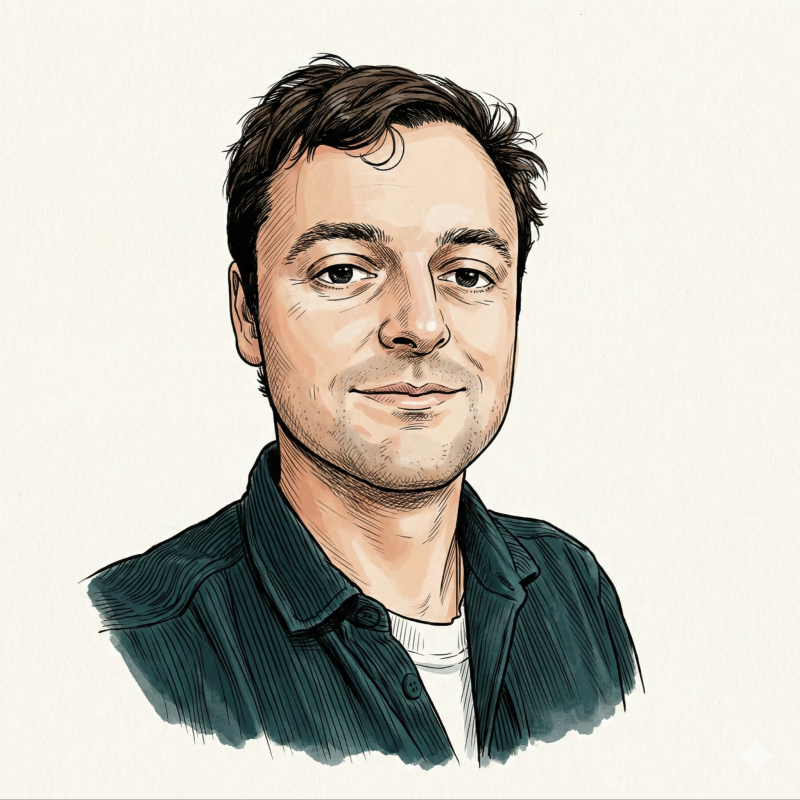
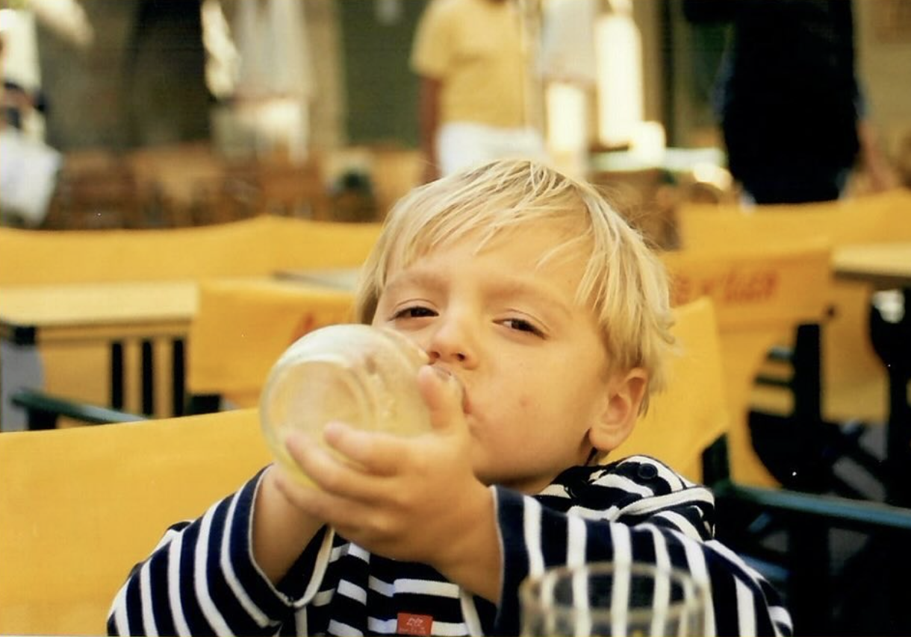
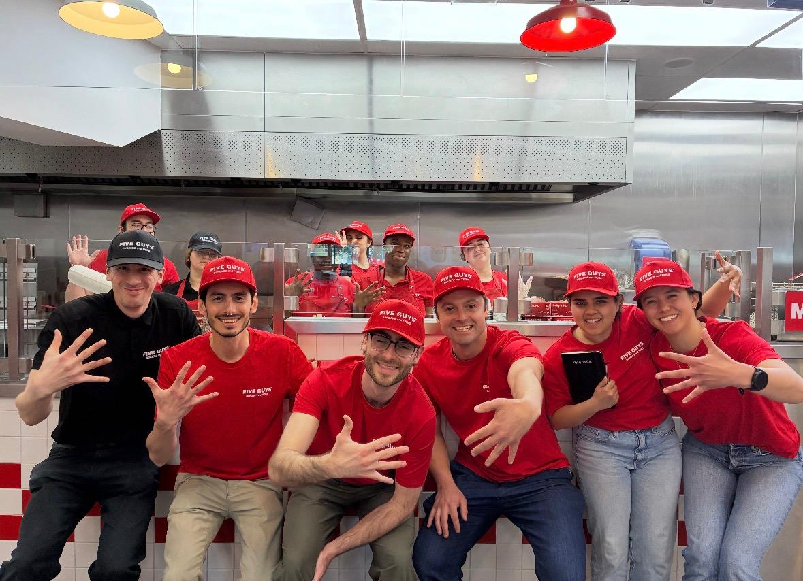
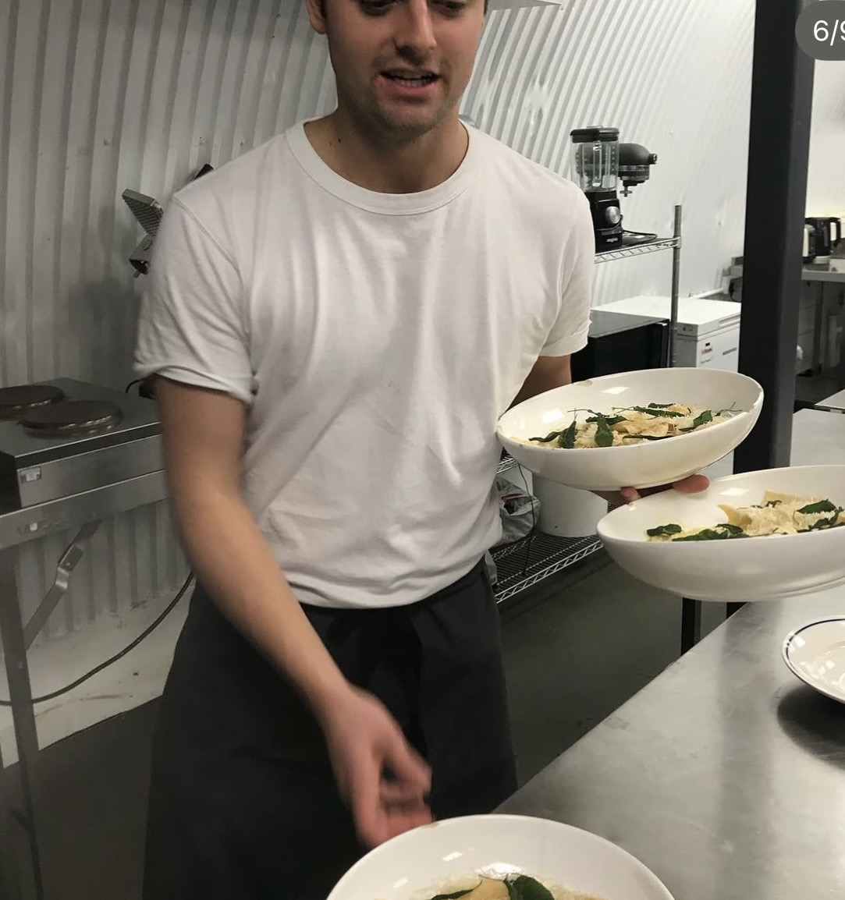
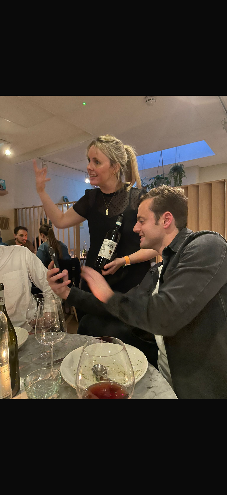
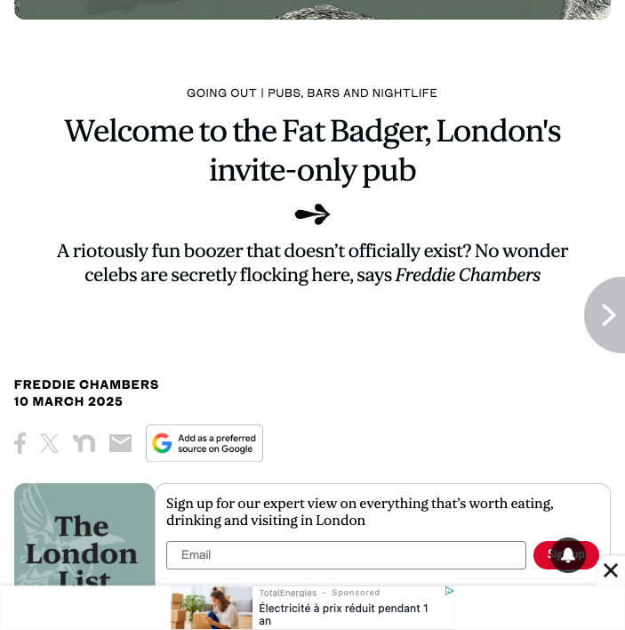
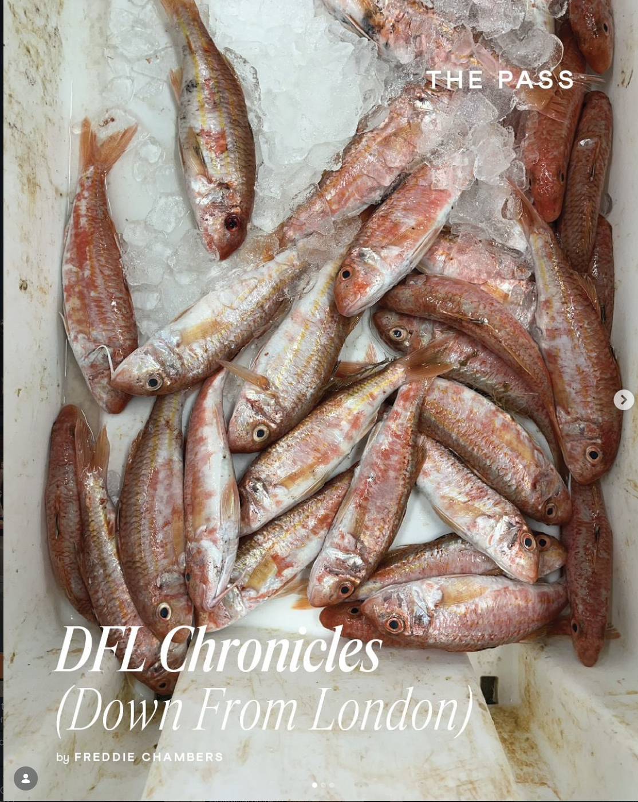
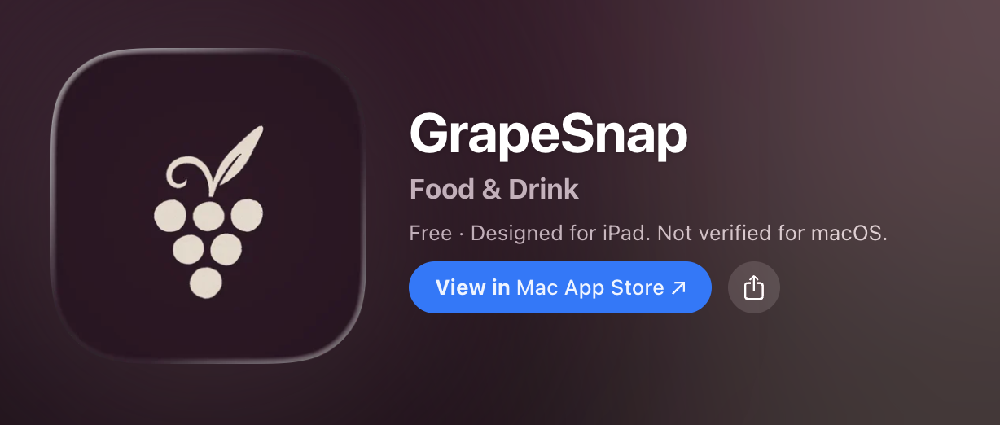
Hospitality has automated the easy bookings and ignored the hard ones. NightDraft is the first tool built for the segment OpenTable abandoned.
Every elite restaurant in London uses OpenTable, SevenRooms, Resy or Tock for tables of 1-6. Fully automated. Customer self-serves, restaurant gets the data, no human needed.
But for the bookings that actually move the P&L - takeovers, private dining, 8+ parties, corporate events, tasting menus - the same restaurants put "For larger bookings, please email us" on their website. The biggest transactions of the week get routed back to a slow, manual, error-prone email process.
A great first reply converts. A slow, generic, or under-priced one loses the booking.
Within seconds of arrival.
Via public sources (LinkedIn role, company, online presence) to surface context the host would have looked up anyway, faster. Soft signal: "this guest works at a private equity firm, lean into the wine pairing menu."
Table-of-10 rules, takeover rules, voice, seasonality, exceptions - all into a private rules engine.
Same product, different reply for a GBP 2,000 takeover vs a GBP 400 birthday. Junior staff can deploy with the owner's voice when the owner can't.
Every owner edit before sending updates the playbook. The same mistake never happens twice.
An agent (Playwright-style web automation) researches every inbound inquiry. Builds a private guest-context layer that sharpens with every inquiry.
Per-guest research at indie-restaurant economics is genuinely new. Two years ago it was impossible:
"Big bookings are the most valuable email I get all week. They're also the only ones I write from scratch." Indie restaurateur, London
On Thursday 23 April 2026 at 11:34am, Laura Stinson — Executive Assistant at Advent International ($100B+ private equity firm, 5 minutes from Lorne) — emailed asking for a 14-cover Thursday booking.
Lorne saw it four days later. By then, Advent had booked elsewhere.
~£1,000 booking lost · 1 of 30% that go unansweredToday, NightDraft does a 45-minute discovery session with the owner. Voice samples, party-size tiers, sign-off ladder, cancellation policy, awkward-conversation patterns. Manual now — founder in the room.
The v2 is an AI agent that runs the same call. Same structured output. Onboards a new restaurant in a day, not a week. Scales without us.
NightDraft enriches the sender, applies the right tier (semi-private, £35/head minimum, 48hr cancellation), drafts the reply in Katie's voice. Lands in her Gmail drafts.
Katie reviews, edits if she wants, hits send. 30 seconds, not 30 minutes. Nothing goes out without her hand on it.
£1,000 booking secured · reply 1 was the conversion leverHi Laura,
Thanks for thinking of us for the 28th — 14 of you on a Thursday at 6pm works nicely. We'd put you in the back room (semi-private), £35/head minimum spend.
I'll need card details to hold it (we charge £30/head for cancellations under 48 hours). Happy to send menus over once we have everyone confirmed.
Look forward to having you in.
Best,
Katie
Strategic objective: Become the default sales-tool for the high-stakes booking segment that OpenTable has explicitly abandoned. Starting with London independent fine-dining in 2026, scaling to multi-venue groups across the UK by 2028.
| Dimension | Answer |
|---|---|
| When | 2026 paid wedge (5 paying logos by year-end). 2027 indie scale. 2028 group expansion. |
| Where | London 2026-27 (the first 5 leads sit within 30 minutes of each other). UK by 2028. |
| Who | Independent fine-dining operators (Katie shape) for the wedge; multi-venue operator-marketers (Chris D'Silva / David Carter shape) for scale. |
| What | Own the high-stakes inquiry-to-booking conversion as a distinct SaaS category. |
Bib Gourmand, Victoria London. Founding design partner.
6 concepts incl. Michelin Dorian, Notting Hill Fish Shop. Ex-Grey advertising, ex-Chevrolet marketing. Confirmed willingness to be second logo.
Manteca / Agora / Oma / Smokestak. Michelin Guide Restaurateur of the Year. Has expressed direct interest.
London independent fine-dining, name held back pending consent.
London independent fine-dining, name held back pending consent.
"In terms of reputation which matters to me a lot. I really hate making mistakes on emails. Makes me very angry." Katie Exton, Lorne ★ from 15-04-26 discovery interview
| End of period | Paying logos | ARR | Key milestone |
|---|---|---|---|
| 2026 (Q4) | 5 paying + 1 design partner (Lorne) | GBP 11k | Edit-logging proves the playbook codifies |
| 2027 (Q4) | 50 indie + 5 group venues | GBP 131k | Outbound channel beyond founder warm network |
| 2028 (Q4) | 200 venues across 30+ groups | GBP 509k | 46% EBIT margin (full P&L on Slide 24) |
Understanding our customers.
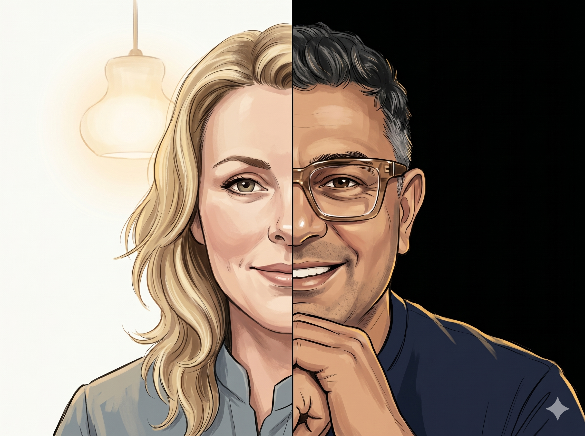
persona comic - personas.png'" />NightDraft serves a structurally specific size band: 30-80 covers, indie or small-group, owner-operated. Below that (under 30, casual): OpenTable handles it. Above (Four Seasons / large hotel F&B): a dedicated reservations manager already exists.
| Dimension | Description |
|---|---|
| Who | 30-60 covers, Bib Gourmand or Michelin-tier, owner-operator. ~600 in London Bib+ tier, ~5,000 UK indie fine-dining. |
| Buying motivation | Time, not money. "Get back on the floor doing what you love." |
| Job NightDraft does | Frees the owner from the most boring part of running the restaurant. |
| Decision unit | The owner alone. |
| WTP anchor | GBP 179/mo. |
| Sales cycle | 2-6 weeks. Founder-led warm intro. |
"A relief." Katie Exton, Lorne, when asked if outsourcing the writing would feel like a loss vs gain ★
| Dimension | Description |
|---|---|
| Who | Multi-venue groups, 3-10 concepts, marketing-trained or brand-led founder. ~50 in London, ~200 UK-wide. |
| Buying motivation | Money, plus brand voice. "Sales tool. You will capture bookings you're losing today." |
| Job NightDraft does | Captures revenue currently leaking out of the inbox. Functions as a marketing-department subscription. |
| Decision unit | Owner-operator. Marketing-decisive. |
| WTP anchor | GBP 400+/venue/mo. Group of 5 = GBP 2,000/mo per logo. |
| Sales cycle | 2-4 months. Slower per logo, far higher ACV. |
"I've got six concepts and six different reply styles. None of them are mine anymore." Multi-venue operator, London
Paid placement on trusted hospitality channels + earned editorial. GoToFood podcast sponsorship (~GBP 500-2,000/episode). Editorial in The Pass, The Caterer, Code Hospitality, SquareMeal. Founder appearances. Industry-dinner demos. Zero performance-marketing.
30-min demo. Lorne worked example. Edit-logging dashboard preview.
30-day free pilot on actual inbox.
GBP 179/mo. Month-to-month.
Self-improving learning loop. M3 quality > M1.
Tuesday-afternoon dividend testimonials. Indie peer referrals.
Founder warm intros. Operator dinners. Group-operator coverage.
60-min strategic conversation. Marketing-department-subscription framing.
Pilot at 1 concept (founder picks).
Per-venue licensing. GBP 400+/venue/mo. 12-month commitment.
Cross-concept playbook learnings transfer.
Logo on website. Co-marketing case study.
"Does someone I respect already use this?" Peer reference is the single highest-impact signal. Founder credibility is part of this filter. This is why door-to-door selling still works in restaurants - operators are used to enthusiastic founders walking in between services (10-11am or 3-4pm windows).
"Am I in charge, or is the software making decisions for me?" Hard rejection of autosend. NightDraft embeds in the owner's existing workflow. Draft lands in Gmail drafts. Owner edits and sends. Nothing happens without the owner's hand on it. Filter 2 also absorbs "tech stack" concerns.
"I wouldn't want it just kind of sent off." Katie Exton, Lorne ★
"If it sends without me, I'm not buying it. End of conversation." Indie restaurateur, London
| Attribute | What "good" looks like at trial |
|---|---|
| Voice fit | First draft sounds like the owner. One bad draft kills the trial. |
| No-autosend | Owner approves every reply. Hard line. |
| Learning loop | Edit-logging shows the system getting better week-on-week. |
| Junior-staff usability | The owner's manager can use it without retraining. |
| Guest intelligence (Segment B) | Visible value-add for operator-marketers. Not weighted by Segment A. |
| Annual revenue per logo | GBP 2,148 |
| Gross margin | 85% |
| Annual contribution margin (m) | GBP 1,826 |
| Annual retention (r) | 75% |
| Discount rate (i) | 18% |
| Gross CLV | GBP 3,182 |
| CAC | GBP 200 |
| Net CLV (A) | ~GBP 2,982 |
| Annual revenue per logo | GBP 24,000 |
| Gross margin | 88% |
| Annual contribution margin (m) | GBP 21,120 |
| Annual retention (r) | 85% |
| Discount rate (i) | 18% |
| Gross CLV | GBP 54,367 |
| CAC | GBP 1,500 |
| Net CLV (B) | ~GBP 52,867 |
| Dimension | Segment A (Indie) | Segment B (Group) |
|---|---|---|
| Annual revenue per logo | GBP 2,148 | GBP 24,000 |
| Net CLV per logo | GBP 2,982 | GBP 52,867 |
| CLV/CAC ratio | 15x | 35x |
| Sales cycle | 2-6 weeks | 4-8 weeks |
| Total addressable market (UK) | ~5,000 venues | ~200 groups (~1,000 venues) |
| Strategic role | Wedge | Scale |
The technology to deliver it - LLMs that codify a restaurant's playbook and draft in the owner's voice, at indie price points - became commercially viable only in the last 18 months. Legacy booking platforms cannot build this even if they wanted to. NightDraft sits alone at an intersection that did not exist before.
| Competitor | Warfare type | Why they cannot compete |
|---|---|---|
| OpenTable / SevenRooms / Resy | Leader (in 1-6) | Walked away from 8+. No AI/ML product talent. By the time they buy or build, NightDraft owns the playbook library. |
| ChatGPT / Claude (consumer DIY) | DIY substitute | No playbook access. No Gmail integration. No learning loop. Katie tried, abandoned. |
| Word doc templates | DIY status quo | Rot. Don't learn. |
| Sent-folder copy-paste | Status quo | 1-in-8 inquiries lost. |
| Competitor | Warfare type | Why they cannot compete |
|---|---|---|
| Hiring a reservations manager per concept | Status quo (above-band) | GBP 35-45k/yr per venue. 5 concepts = GBP 200k+. NightDraft = GBP 28,800/group/yr. 10x cheaper. |
| GM time on bookings | Status quo (de facto) | Wastes GM time. Inconsistent voice across concepts. |
| Outsourced VA agencies | Substitute | No voice fit. Brand-voice damage risk. |
| Generic CRM repurposed (Hubspot) | DIY workaround | No hospitality depth. No playbook codification. |
"Even sometimes the kind of copying it, putting it into a different platform... I've ended up not doing it." Katie Exton, Lorne ★
The leaders have made a deliberate choice to ignore the high-stakes inquiry segment. OpenTable's revenue is per-cover commission on 1-6 volume. The 8+ segment is bespoke, infrequent, and does not fit their model. NightDraft is not a frontal challenger. It is a niche specialist in a segment the leaders cannot enter quickly even if they wanted to.
Lorne 24-thread dataset (April 2026) is structured, tagged, and pattern-extracted. NightDraft v1 ships with: a 9-template voice library, a 5-register sign-off ladder, an 8-failure-mode operational playbook, a complete 30-80-cover capacity matrix, and a 7-tier pricing matrix - all mined from real customer behaviour. No competitor has this depth of evidence.
Lived hospitality experience plus a vertical hospitality network. Founder origin on Slide 2.
LLM-native build, vibe-coded fast, Anthropic API economics that make GBP 179/mo viable.
Starting at the onboarding call. NightDraft does not ask Katie to write a 30-page rules document. Onboarding starts with an agentic interview: "walk me through your last takeover. What would you do if a 14-cover comes in for a Sunday lunch in August." Each answer becomes a captured rule. The same Jack & Jill long-term context capture pattern.
The warm-network GTM (founder-led, podcast-amplified).
"I'm running a Michelin restaurant. I'm not running an inbox." Operator-marketer, London group
Long-term planning.
A perceptual map is a picture of how customers actually arrange competing options in their head. It exposes whitespace (empty quadrants), competitor vulnerability, and whether your differentiation is genuinely perceived. We built two maps because demand fit and competitive defence are different questions.
Based on author's own perception. Maps assume a 1-10 scale; positions are justified in the per-map "where each player sits" callouts above. Methodology follows MCV S04 attribute-rating approach (factor-analysed to two dimensions per map). Sources: Lorne 24-thread dataset (April 2026), Katie discovery interview (15-04-26), MCV S04.2 Perceptual Map Explained.
For owner-operated independent restaurants and small operator-marketer groups serving 30-80 covers,
NightDraft is the AI-powered sales tool for high-stakes booking inquiries - 8+ parties, takeovers, private dining. The bookings with the most money on the line, the most people in the room, and the most complexity in the reply.
Unlike OpenTable, ChatGPT, or hiring a reservations manager,
NightDraft codifies the owner's playbook conversationally over time, drafts every reply in the owner's voice into Gmail, and learns from every edit - so the same mistake never happens twice.
| Conversational playbook capture | No memory in generic AI; no drafting layer in OpenTable |
| Voice-fit drafting | Vertical depth + Lorne dataset + edit-logging |
| Self-improving learning loop | Data-flywheel moat |
| Guest intelligence | No competitor combines drafting + research |
| Founder-as-moat | Lived hospitality + AI/ML capability + warm network |
"I want it to feel like the founder built it for me. Not a tech company." Multi-venue operator, London
Short-term planning.
Cody Schneider playbook: clean, two-beat, knows what it is in one read. "Overnight" was the original concept (drafts ready when the owner wakes up); the name kept the connection while the product evolved. SEO landscape was uncontested at naming time - "NightDraft" had no existing branded competitor, which matters in a category that does not yet exist. In a vacated segment, the name has to own its keyword from day one.
The product works in the background while the owner is on the floor. Reflects founder's lived hospitality experience and operator preference for tools that disappear into workflow.
The product's purpose. Operator-language. Reinforced everywhere.
The AI/ML association. Every edit makes the next draft better. Learning curve, not chatbot iconography.
"There are sort of conditions for eight, there are conditions for ten." Katie Exton, Lorne ★
From: corporate Executive Assistant
Party: 9 covers, dinner
Date: Thursday, 6 weeks out
"Looking for a dinner for 9 of our partners. Open to the kitchen's recommendation on menu - happy to discuss."
Generated from the playbook - 9-cover tier, set-menu pitch, 48h cancellation, "Best, Bookings" sign-off.
"Thank you for thinking of us. For a party of 9 we'd recommend our set tasting menu at GBP 75/head, with optional wine pairing... 50% deposit at booking, 48h cancellation."
Added the "fish might change" seasonal hedge because the booking is 6 weeks out.
"...note our menu shifts seasonally so the fish course may change between now and then; we'll confirm closer to the date."
Outcome: booking confirmed.
One thread from the Lorne 24-thread dataset (April 2026). Real input, real draft, real edit, real outcome.
Most AI products shout. NightDraft does not. The brand is hospitality-first, AI second.
| Anchor | Price | Buyer's logic |
|---|---|---|
| Doing nothing / sent-folder copy-paste | GBP 0 | "But I'm losing 1-in-8 inquiries = GBP 30-100k/yr leaking out" |
| Word doc templates | GBP 0 | "Mine rotted - this is broken-by-default" |
| ChatGPT Pro | GBP 20/mo | "Doesn't do what NightDraft does, but the number is known" |
| Part-time inbox VA | GBP 800-1,500/mo | "Quality risk, off-shore voice mismatch" |
| Hiring a reservations manager | GBP 35-45k/yr | "Too expensive for one venue, prohibitive across a group" |
| NightDraft (Indie) | GBP 179/mo | "One captured booking = pays for itself." Net CLV GBP 2,982 (S9) at GBP 200 CAC = 15× return per logo. |
| NightDraft (Group Starter) | GBP 400/venue/mo | "Reservations-manager-equivalent at 1/10 the cost" |
NightDraft's edit-logging and guest research generate price-elasticity data for the restaurant's own bookings. The AI/ML does not just price NightDraft - it gives the restaurant a price-discovery tool for its own high-stakes bookings.
The system observes which inquiries accept which deposit / minimum-spend / package rate. Surfaces back: "your 12-cover Tuesday inquiries accept GBP 75/head minimum; could push to GBP 85."
Hybrid SaaS + per-booking pricing flagged as v2 option. v1 is flat SaaS.
Across 50+ restaurants by 2027, market-wide price elasticity becomes visible (anonymised, opt-in).
| Tier | Who | Price | What they get |
|---|---|---|---|
| Indie | Segment A (single restaurant) | GBP 179/mo | Core: drafting, voice fit, learning loop, guest research |
| Group Starter | Segment B (3-6 concepts) | GBP 400/venue/mo (12-mo) | Core + cross-concept playbook + group dashboard |
| Group Premium | 7+ concepts | GBP 500/venue/mo (annual) | Core + cross-concept playbook + dedicated success rep + custom integrations (OpenTable / SevenRooms when ready) |
Groups capture more per venue: more inquiries × higher AOV.
Group accounts get cross-concept playbook integration.
Indies don't need group features; groups need them.
London restaurant marketing is not a media-buy market — it's an access market. Operators don't read trade press to find tools; they hear about them at industry dinners and from operators they respect. NightDraft's distribution mirrors this: get the five most culturally-dominant restaurants in London first. The rest follow because we are now the tool the cool ones use.
London hospitality is a tight, gossip-driven industry. Operators take recommendations from operators they respect, not from trade press cold. The founder is already inside this network — Evening Standard column, family in food media (cousin = Michelin Restaurateur of the Year), six years embedded with Lorne, on the guest list at the parties where commissioning decisions happen. The wedge is to convert that access into product adoption at five culturally-dominant venues. Once those five run NightDraft, every other indie operator in the city has heard about it within a quarter.
| Channel | Spend | Logic |
|---|---|---|
| Cool 5 onboarding | GBP 6,000 | Free pilots, custom playbook setup, and case-study production (video, photography, written walkthroughs) at the five culturally-dominant restaurants. The "spend" is mostly founder time; this is the production cost. |
| GoToFood podcast sponsorship | GBP 12,000 | 12 episodes × GBP 1,000. Amplification of social proof: "the cool ones use NightDraft" reaches every other indie operator in the audience. See Slide 20 for the produced spot. |
| Industry dinners / operator events | GBP 4,000 | Where the cool 5 → next 50 conversion happens in person. Founder presence at hospitality events. |
| Reserve | GBP 2,000 | Operational |
NightDraft must also be discoverable in LLM responses (when an operator asks ChatGPT/Claude "what's the best AI tool for restaurant big-booking emails?"). Required: owned content (Evening Standard column, NightDraft blog, Cool 5 case studies), earned media, structured-data optimisation, citation network. By 2027 GEO traffic > SEO for new categories.
A Waymo isn't weird tech. It's just a cab. But it's the only thirty minutes a London restaurant owner ever sits still without an interruption. We use that thirty minutes to onboard them — and let The Pass, Eater, and the Guardian watch.
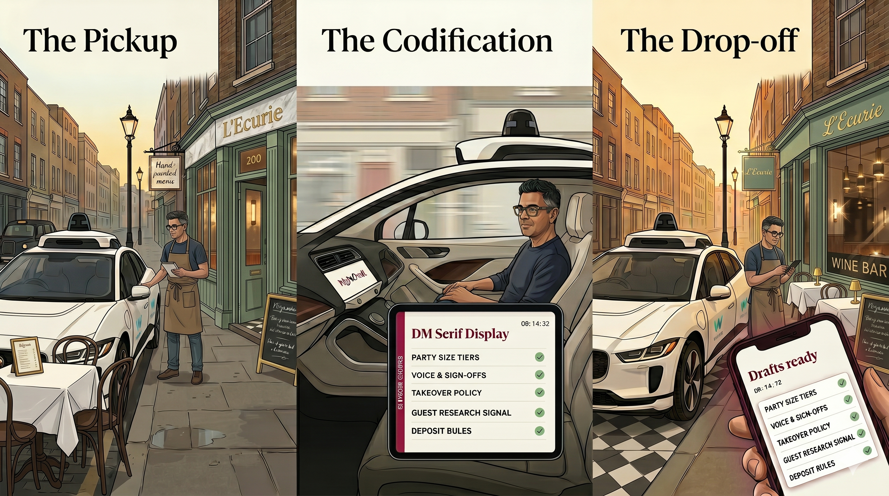
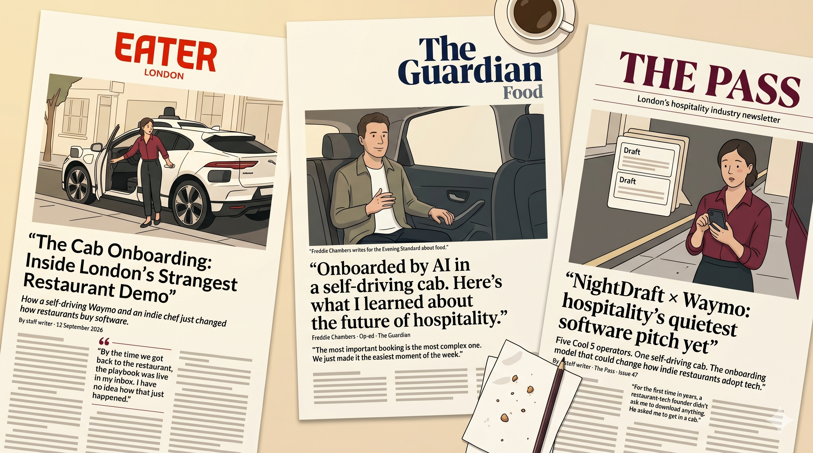
Stunt window: August-October 2026. Five Cool 5 candidates already named on Slide 19. Visual heroes generated via Gemini using the brand-system reference bundle — GenAI used in service of the brand, not in place of it. Full plan: NightDraft — The Waymo Onboarding Stunt.
Indie operators (the cool ones) are highly sceptical of paid media. The Go To Food Podcast is the industry-leading standard. Hosts are operators themselves. Listeners are owner-decision-makers in the band we want. So that's where we buy — and ideally, the rights to the show itself.
No targeting waste. No paid-acquisition lift to chase. Trust transfers from the hosts to NightDraft because the hosts are operators, not advertisers. Binet & Field 60-40 rule (S09 lecture); S11&12 Novela 95-5 logic — most of the audience is not buying this quarter, but when they are, NightDraft is the named tool.
| Stage | Objective | Main message |
|---|---|---|
| Awareness | Become the named tool when operators talk about big-booking pain | "NightDraft is the tool the cool restaurants use." |
| Trust transfer | Have a respected industry voice say our name | Host-read endorsement framing — not corporate read. Founder VO with host bookends. |
| Recall | Be top-of-mind when an operator next misses a GBP 2,000 inquiry | "Onboarded before the meter stops." Repeated across episodes. |
Founder voiceover recorded by Freddie Chambers, May 2026. Host intro & outro voiced by ElevenLabs (George, British male) — placeholder until paid host-read deal closes. GenAI used for the host bookends only; the founder voice is real. Brand associations laddered up from Slide 15 (quiet expertise, the most important booking is the most complex one).
| Stage | Period | Channel mix | What it looks like |
|---|---|---|---|
| Stage 1: Wedge | 2026 | 90% founder warm network + 10% earned editorial | 5 paying logos closed via direct intros (Katie design partner + Chris + David + 2 indies) |
| Stage 2: Inbound | 2027 | 50% warm network + 30% podcast/PR-driven inbound + 20% peer referrals | Founder still leads sales; podcasts and editorial drive incremental demos |
| Stage 3: Repeatable | 2028 | 30% founder + 40% inbound + 30% group operator-network | First sales hire; group accounts compound via cross-concept adoption |
PLC → Chasm → Industry Rule of Thumb → Bass Diffusion → ACCORD.
Introduction 2026, early Growth 2027-28. Category brand-new.
First 5-15 logos = innovators (Katie, Chris, David, warm leads). Crossing to early-majority (2027-28) requires category awareness (PR + podcast), peer references (first cohort), defensible case studies (Lorne worked example + early group).
| Year | Total venues | Innovators | Imitators | New venues this year |
|---|---|---|---|---|
| 2026 | 5 | 5 (founder warm network) | 0 | 5 |
| 2027 | 50 | 3 | 42 (peer referral + inbound) | 45 |
| 2028 | 200 | 0 | 150 (indie inbound + group multi-venue rollout) | 150 |
| Factor | NightDraft 2028 |
|---|---|
| Advantage (vs status quo) | High - 1-in-8 inquiries lost = quantified pain. Met. |
| Compatibility (Gmail-native) | High - no new tool to learn. Met. |
| Complexity | Low - 1-hour setup, conversational onboarding. Met. |
| Observability | High - edit-logging dashboard, captured-booking count. Met. |
| Risk perception | Medium - AI fatigue + control worry. Mitigated by no-autosend + founder trust. |
| Divisibility | High - 30-day free pilot. Met. |
| Line item | 2026 | 2027 | 2028 |
|---|---|---|---|
| Indie venues (paying) | 5 | 50 | 170 |
| Group venues (paying) | 0 | 5 | 30 |
| Indie revenue (GBP) | 10,740 | 107,400 | 365,160 |
| Group revenue (GBP) | 0 | 24,000 | 144,000 |
| Total revenue | 10,740 | 131,400 | 509,160 |
| Variable costs (Anthropic API + hosting, ~12% rev) | (1,289) | (15,768) | (61,099) |
| Gross margin | 9,451 (88%) | 115,632 (88%) | 448,061 (88%) |
| Marketing spend | (24,000) | (40,000) | (60,000) |
| Founder cost (forgone salary, partial) | (60,000) | (80,000) | (90,000) |
| Tech / tools / contractors | (10,000) | (25,000) | (50,000) |
| Legal / admin | (5,000) | (8,000) | (15,000) |
| Operating expenses | (99,000) | (153,000) | (215,000) |
| EBIT | (89,549) | (37,368) | 233,061 |
| EBIT margin | -834% | -28% | +46% |
| Line | Spend |
|---|---|
| Podcast sponsorship | GBP 24,000 |
| Earned media + content production | GBP 12,000 |
| Industry events + operator dinners | GBP 12,000 |
| Case studies / PR | GBP 6,000 |
| Reserve | GBP 6,000 |
| Total | GBP 60,000 |